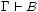

sera représentée par
sera représentée par
TP1 Logique |
Dans ce TP, nous allons développer un assistant interactif pour construire et manipuler des preuves en déduction naturelle.
Suivez les instructions suivantes :
Pour pouvoir utiliser les fonctions créées durant le TP, en mode compilé, vous devrez exécuter make après chaque modification de fichier.
Pour le mode interprété, au lancement d’ocaml (avec le raccourci C-c C-e sous emacs), ne choisissez pas l’interpréteur par défaut (ocaml), mais tapez plutôt ./mytop et validez. Vous disposerez ainsi des fonctions disponibles pour réaliser le TP.
Nous manipulerons les formules propositionnelles à l’aide du type somme suivant :
type formule = | Faux | Var of string | Et of formule*formule | Ou of formule*formule | Imp of formule*formule
Les fonctions parse : string -> formule et print : formule -> string vous permettrons de comprendre un peu mieux ce type.
#parse "a=>b=>c&d";; - : Lib.formule = Imp (Var "a", Imp (Var "b", Et (Var "c", Var "d")))
#print (Ou (Faux,Imp (Var "b",Et (Var "c",Var "d"))));; - : string = "Faux|(b=>(c&d))"
Par convention, un formule de la forme est affichée . Constatez le avec un exemple.
Exercice : Écrire une fonction qui teste si une formule est de la forme .
Nous utiliserons un type abstrait pour manipuler les ensembles de formules. Les différentes opérations disponibles sur ces ensembles sont détaillées ici
De manière générale, toutes les fonctions à votre disposition dans ce TP sont listées sur cette page.
Nous utiliserons un enregistrement pour représenter les séquents
type sequent = { contexte : formule ens; but : formule }
Pour exemple, voici une fonction qui construit un séquent avec un contexte vide à partir d’une formule logique.
#let nouveau_sequent f = {contexte=vide; but=f};;
val nouveau_sequent : formule -> sequent = <fun>
L’accès à une composante se fait à l’aide du point
#let seq = nouveau_sequent Faux in seq.but;; - : formule = Faux
Exercice : Écrire une fonction qui teste si un séquent est de la forme avec .
Notre assistant de preuve permettra de construire de manière interactive une preuve en déduction naturelle. Cette page récapitule les règles de la preuve par déduction naturelle en donnant pour chacune la commande associée dans notre assistant.
Voici un exemple d’utilisation :
#deduc genSousButs;; (* Lancement de l’assistant dans l’interpréteur Ocaml *) But ? a=>(a=>b)=>b;; (* On donne le tautologie à prouver *) Règle ? IntroImp;; (* Utilisation de la règle IntroImp *) Règle ? ii;; (* Utilisation de la règle IntroImp avec son raccourci *) Règle ? ei a;; (* Utilisation de la règle ElimImp avec la paramètre a *) Règle ? a;; (* Utilisation de la règle Ax *) Règle ? a;; (* Utilisation de la règle Ax *) sauver cette preuve ? (o/n) [o] : ;; (* La preuve est finie, on peut la sauvegarder *) donnez un nom : exemple1;; (* Un fichier exemple1.prf est créé *) - : unit = ()
La même manipulation est possible en mode compilé, en lancant ./deduc dans un terminal. Les doubles points virgules deviennent alors superflus.
La commande Stop permet d’interrompre la preuve en cours. Centre permet de centrer le but courant dans la fenêtre graphique.
Pour visionner l’arbre de preuve précédemment construit, il suffit de taper :
#affiche (charge "exemple1.prf");; - : unit = ()
La fenêtre suivante apparaît alors.
Pour fermer la fenêtre, tapez ’q’. Pour effectuer la même manipulation en mode compilé, tapez ./affiche exemple1.prf dans un terminal.
Les différentes commandes possibles sont regroupées dans le type commande.
Ouvrir le fichier genSousButs.ml. Vous devez compléter la fonction genSousButs : sequent -> commande -> sequent list * string de façon à ce que (genSousButs seq com) renvoie un couple constitué de
Si la commande ne peut être appliquée, renvoyez le couple ([],"erreur").
Exemple : Appliquer la commande IntroEt à un sequent doit produire le couple ([;],"IntroEt")
Cette fonction genSousButs peut être testée de la façon suivante
Autre méthode :
Pour vérifier si un arbre respecte les règles de la déduction naturelle, vous pouvez utilisez la commande valide (charge fichier) dans l’interpréteur ou ./valide fichier dans un terminal.
Un arbre peut être sauvegardé avec la fonction sauve : arbreDePreuve -> string -> unit ((sauve p "f") sauve la preuve p dans le fichier "f.prf").
Pour tester votre travail et vous exercer un peu aux preuves par déduction naturelle, prouvez les tautologies suivantes dans l’assistant. Sauvegardez vos preuves et vérifier les avec la fonction valide.
Nous représentons les preuves à l’aide d’arbres avec le type arbreDePreuve.
À titre d’exemple, voici une fonction qui teste si un arbre de preuve ne contient que des règles du système NM.
#let rec rec testNM a = match a with | RegleAx s -> true | RegleIntroImp (s,a1) -> testNM a1 | RegleElimImp (s,a1,a2) -> testNM a1 && testNM a2 | RegleIntroEt (s,a1,a2) -> testNM a1 && testNM a2 | RegleElimEt1 (s,a1) -> testNM a1 | RegleElimEt2 (s,a1) -> testNM a1 | RegleIntroOu1 (s,a1) -> testNM a1 | RegleIntroOu2 (s,a1) -> testNM a1 | RegleElimOu (s,a1,a2,a3) -> testNM a1 && testNM a2 && testNM a3 | RegleElimFalse (s,a1) -> false | RegleIntroNon (s,a1,a2) -> testNM a1 && testNM a2 | RegleElimNon (s,a1,a2) -> false | RegleTiersExclu s -> false | RegleAbsurde (s,a1) -> false | RegleElimNonNon (s,a1) -> false | _ -> false;; val testNM : Lib.arbreDePreuve -> bool = <fun>
Comme vous le savez, les règles IntroNon, ElimNon, Absurde et ElimNonNon sont redondantes. Cela signifie qu’un arbre de preuve (valide) peut toujours être transformé de façon à obtenir un preuve valide du même but, mais en utilisant aucune de ces règles.
Écrire une fonction enleve_superflu : arbreDePreuve -> arbreDePreuve qui réalise la transformation correspondante. Vous écrirez cette fonction dans le fichier enleve_superflu.ml. Pour tester, vous pouvez utiliser le mode interprété ou le mode compilé.
Les arbres de preuves générés par l’assistant deduc possèdent des séquents dont les contextes son souvent inutilement grands. Écrire un fonction simplifie_contextes : arbreDePreuve -> arbreDePreuve qui effectue une simplification des différents contextes d’un arbre. Vous écrirez cette fonction dans le fichier simplifie_contextes.ml. Pour tester, vous pouvez utiliser le mode interprété ou le mode compilé.
La commande Lemme nom de l’assistant permet de terminer le sous but courant en invoquant une preuve présente dans le fichier nom.prf.
Exemple :
avec dans le fichier et1.prf, l’arbre suivant
Ajouter dans le fichier genSousButs.ml le traitement de la commande Lemme.
Quelques indications :
Indications :
Une substitution sera représenté par une liste d’association de type (string*formule) list. Par exemple, la substitution sera représentée par
# [("p",Et (Var "a",Var "b"));("q",Var "b")];;
- : (string * formule) list = [("p", Et (Var "a", Var "b")); ("q", Var "b")]
Exemple de substitution non valide :
Exemple :
 ne peut pas être instancié pour obtenir
ne peut pas être instancié pour obtenir
Attention à ne pas confondre avec de l’unification !
L’ajout de cette nouvelle commande a pour conséquence que les arbres sauvegardés ne sont plus valides selon les règles strictes de la déduction naturelle (le noeud RegleLemme (s,f) indique qu’une preuve a été interrompu en utilisant le lemme du fichier f).
Écrire une fonction complete_arbre : arbreDePreuve -> arbreDePreuve qui permet de compléter un arbre (dans le mode interactif d’Ocaml).
Une commande Aide a été ajoutée. Cette commande affiche dans le terminal la liste des règles applicables à un moment donné de la preuve. Pour en disposer, vous devez mettre à jour les fichiers suivants :
Dans lib.ml se trouvent les squelettes des fonctions <Règle>Applicable : sequent -> bool qui renvoient true si la règle <Règle> est applicable au séquent donné en paramètre. Compléter ces squelettes. Que constatez-vous ?
Vous pouvez reprendre les preuves précédentes avec cette aide supplémentaire.
This document was translated from LATEX by HEVEA.